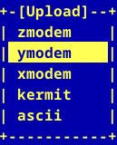
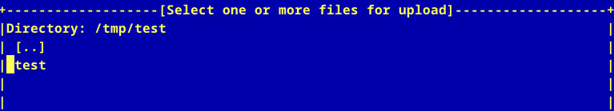
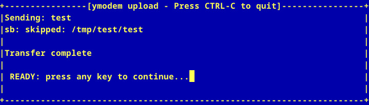

參考資訊：
https://www.ohse.de/uwe/software/lrzsz.html
https://ascheng.medium.com/linux-using-minicom-to-transfer-data-between-host-and-development-board-platform-f67133f386e2
接收端
$ lrz
waiting to receive.**B0100000023be50
傳送端
CTRL+A => S


